Visual Journal
Images from across Central Asia, the Caucasus, Turkey, and Europe — collected over several years of travel, fieldwork, and diplomatic work.
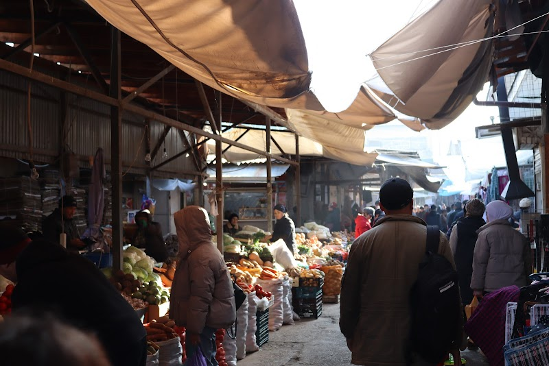
Morning Bazaar
Kyrgyzstan
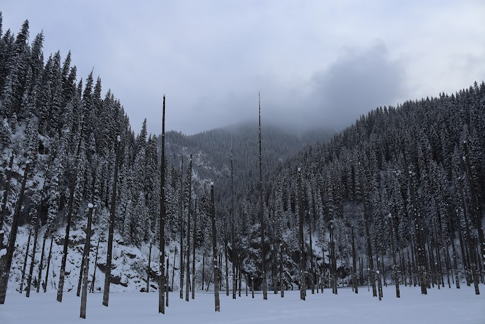
Kaindy Lake
Almaty Oblast, Kazakhstan
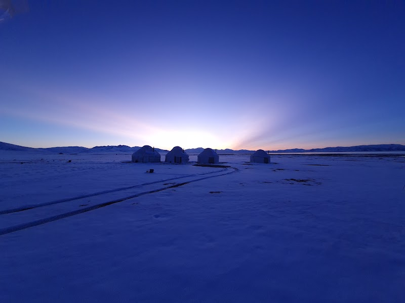
Son-Kul at Dusk
Naryn Oblast, Kyrgyzstan
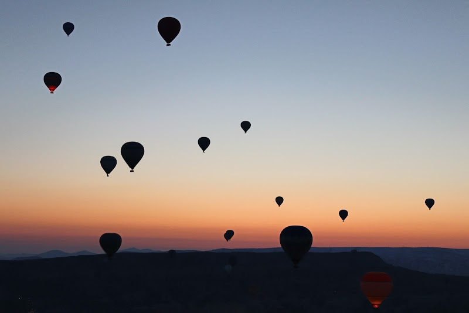
Before Dawn
Göreme, Cappadocia, Turkey
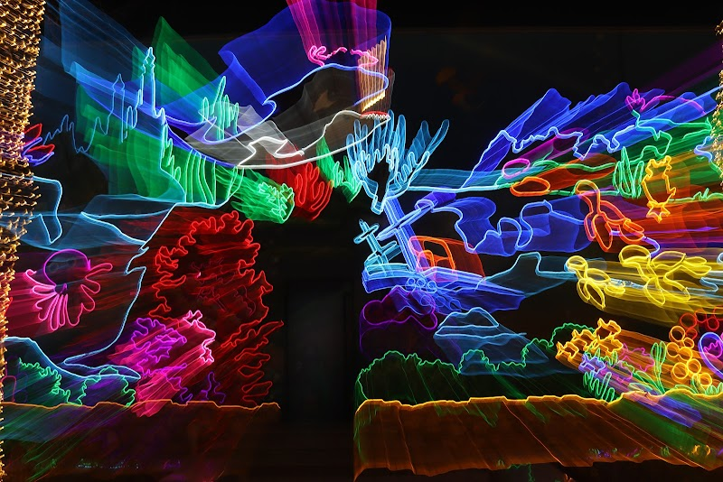
Neon Pavilion
Central Asia
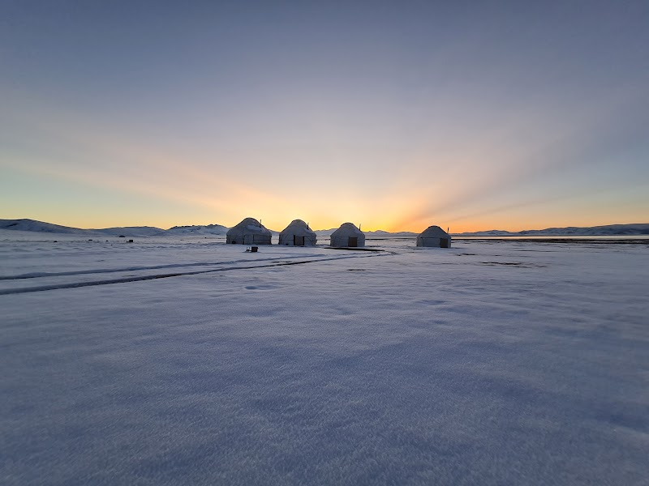
Son-Kul at Sunset
Naryn Oblast, Kyrgyzstan
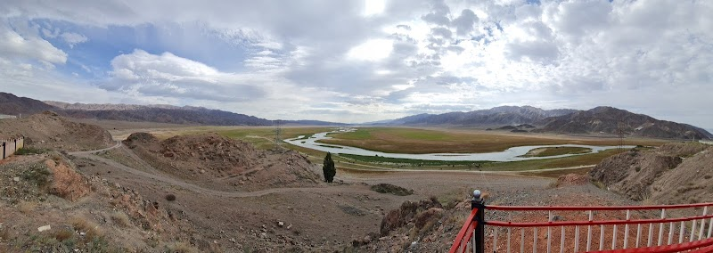
Naryn River Valley
Naryn Oblast, Kyrgyzstan
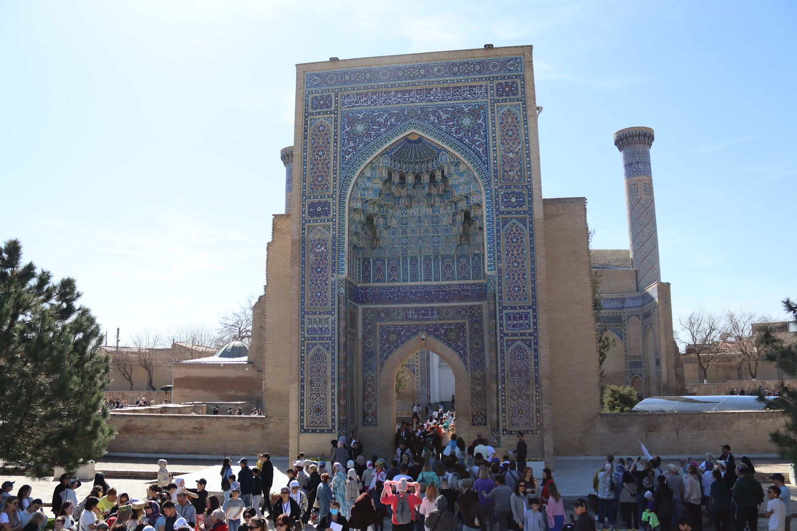
Gur-e-Amir
Samarkand, Uzbekistan
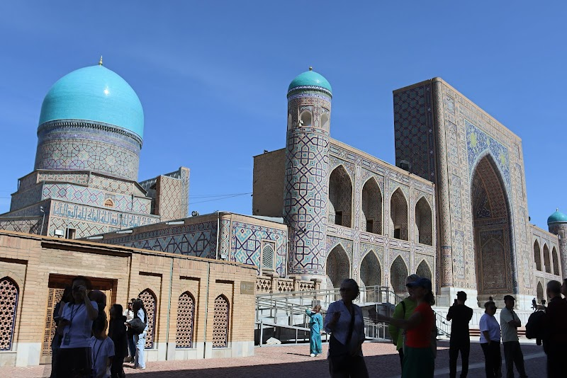
Tilya-Kori Madrasah
Samarkand, Uzbekistan
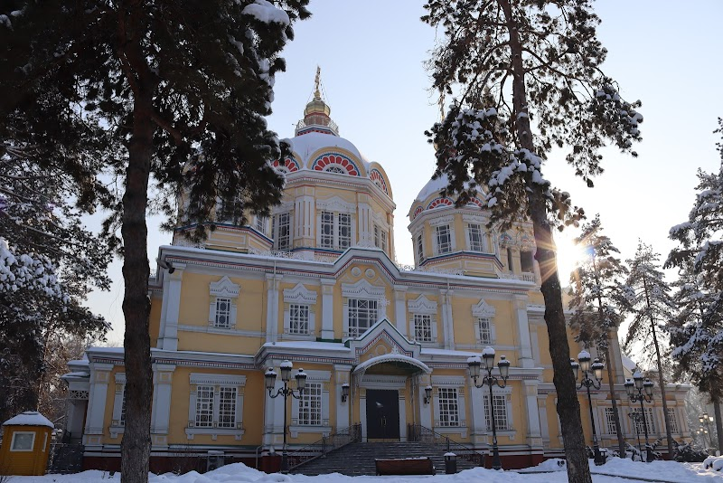
Ascension Cathedral
Almaty, Kazakhstan
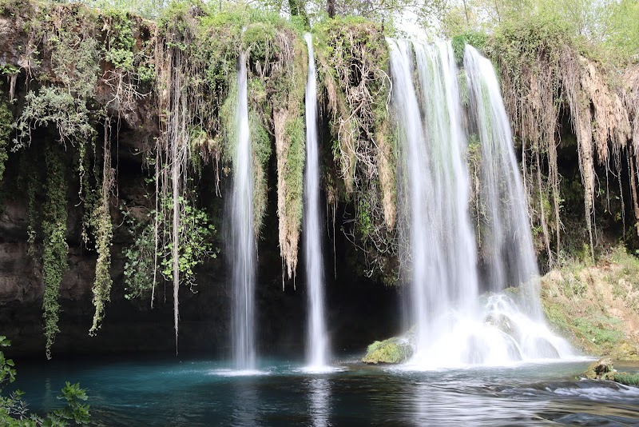
Duden Falls
Antalya, Turkey
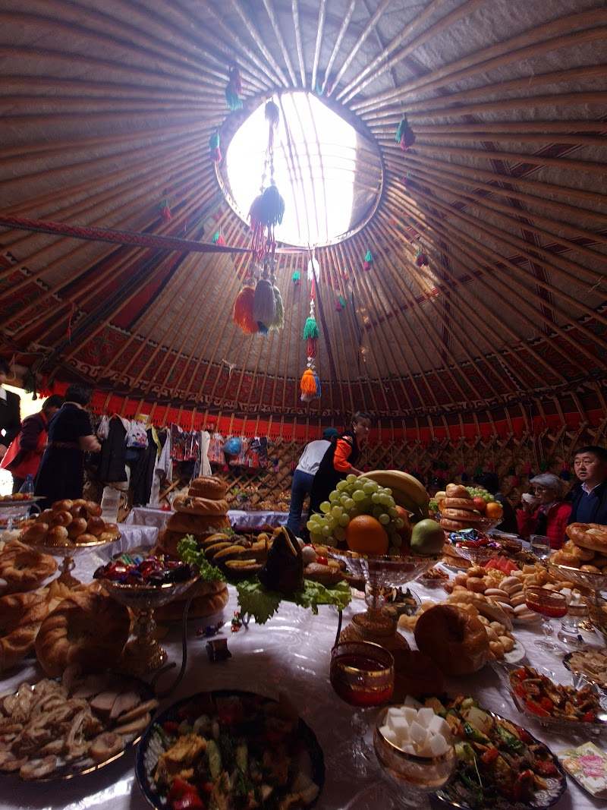
Inside the Yurt
Naryn, Kyrgyzstan
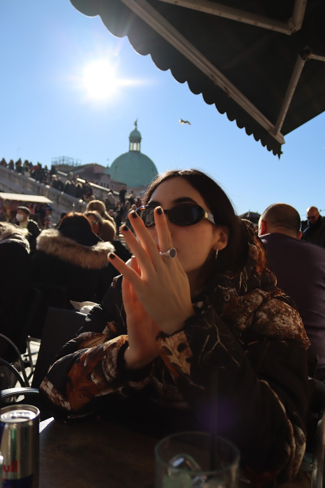
Afternoon in Venice
Venice, Italy
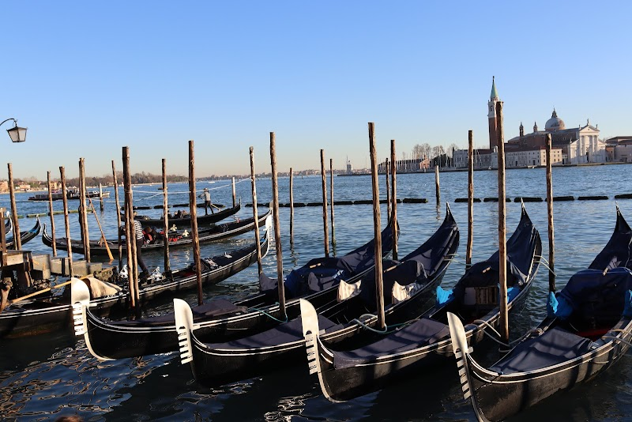
Grand Canal Gondolas
Venice, Italy
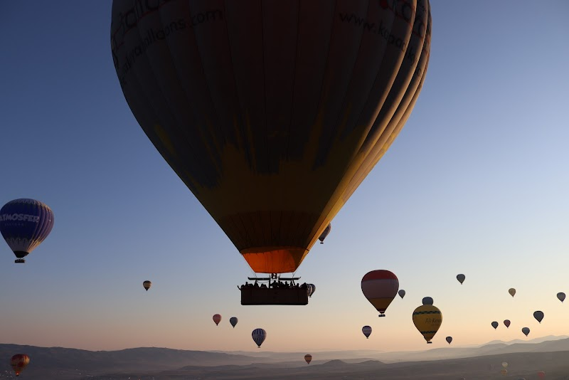
Ascent
Göreme, Cappadocia, Turkey
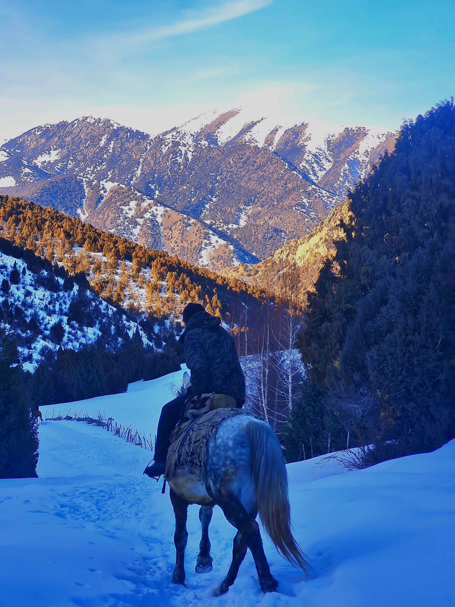
Horseback in Winter
Kyrgyzstan
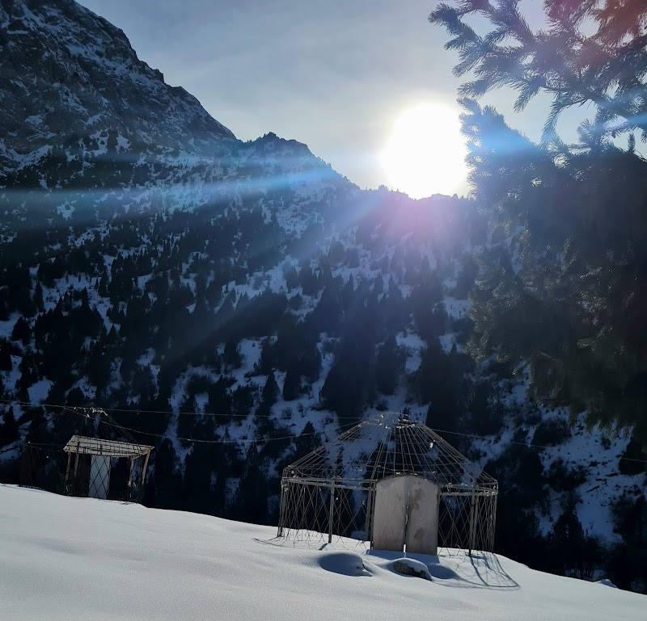
Winter Yurt Frames
Naryn, Kyrgyzstan
March on Washington
Washington, D.C.
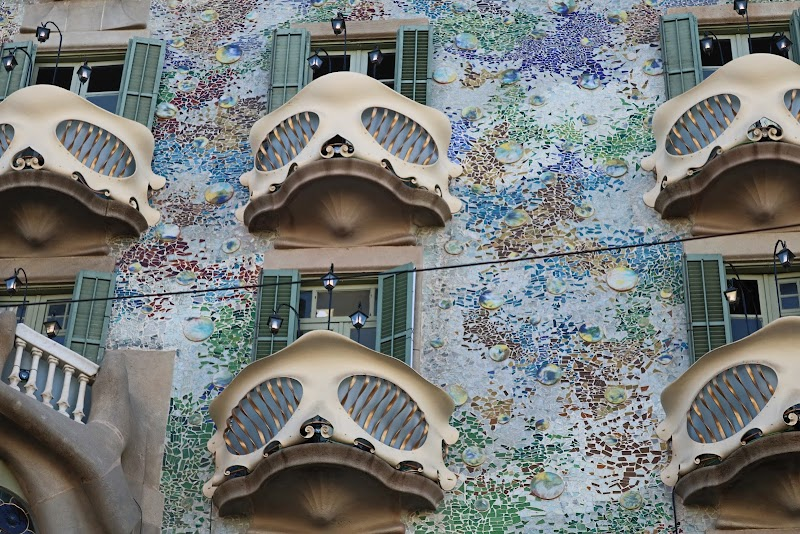
Casa Batlló
Barcelona, Spain
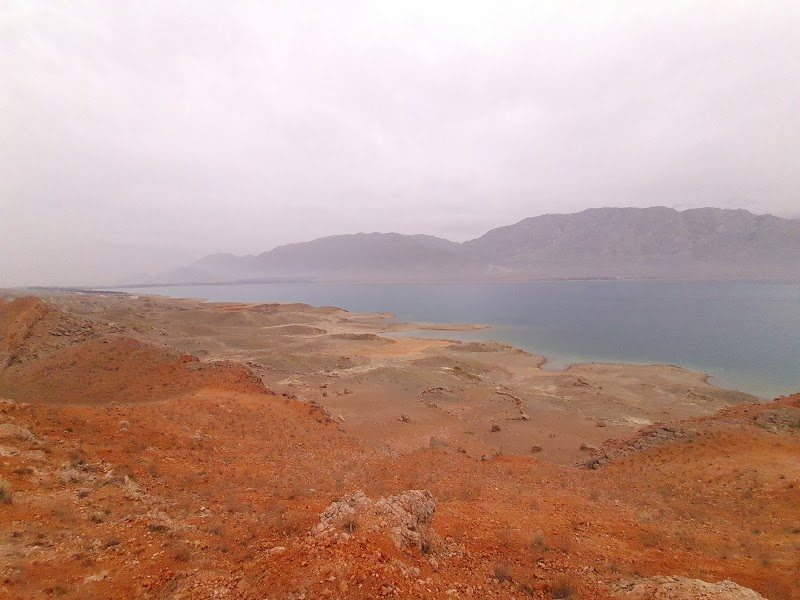
Toktogul Reservoir
Jalal-Abad Oblast, Kyrgyzstan
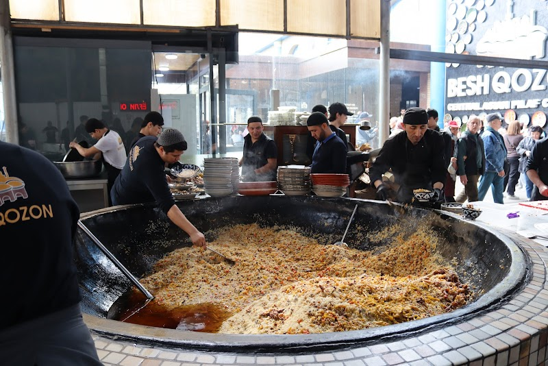
Plov at Besh Qozon
Tashkent, Uzbekistan